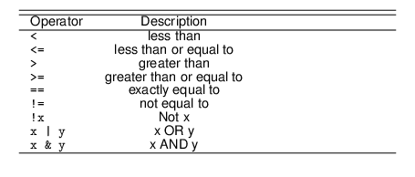

Introduction to R
Self-Assessment Questions3
- How do you calculate the relative frequencies for each of the categories of a variable?
- Give an example of a dichotomous variable.
- Why is age a continuous variable instead of a discrete variable?
- How does an interval scale differ from an ordinal scale? Explain using examples (not from the lecture).
- How does a ratio scale differ from an interval scale? Explain using examples (not from the lecture).
Please stop here and don’t go beyond this point until we have compared notes on your answers.
R & RStudio – Installation
Today we start working with R and the first step is to install the program. Please follow these instructions:
- Go to https://cran.r-project.org/mirrors.html and select a server from which you want to download R. It is convention to do this from the server which is nearest to you. Follow on-screen instructions and install the program.
- Go to https://rstudio.com/products/rstudio/download/ and download RStudio Desktop which is free. Install the program.
- Now open RStudio - you do not need to open R itself, as we will be operating it through RStudio.
Whilst you need to install both R and RStudio, we will never be working with R directly. Instead, we will be operating it through RStudio.
R - Getting Started
In this worksheet and also in all other presentations and documents I use on this module, I am using two different fonts:
- Font for plain text
A typewriter font for R functions, values, etc.
I am also regularly including “screenshots” of operations in R with their output. Whenever you see these, please replicate them on your own computer. To start, let’s have a look at RStudio itself. When you open the programme, you are presented with the following screen:

Figure 1: RStudio
It has – for now – three components to it. On the left hand-side you see the so-called Console into which you can enter the commands, and in which also most of the results will be displayed. On the right hands side, you see the Workspace which consists of an upper and a lower window. The upper window has three tabs in it. The tab Environment will provide you with a list of all the data sets you have loaded into R, and also of the objects and values you create (more on that later). Under the History tab, you find a history (I know, who would have thought it) of all the commands you have used. This can be very useful to retrace your steps. In the Connections tab you can connect to online sources. We will not use this tab.
In the lower window, you have five tabs. Under Files you find the file structure of your computer. Once you have set a working directory (more on that in a moment), you can also view the files in your working directory here which gives you a good overview of the files you need to refer to for a particular project. The Plots tab will display the graphs we will be producing. Packages form the heart and soul of R and they make the program as powerful as it is (again, more on that later). RStudio also has a Help function, which is rarely very illuminating. I usually search for stuff online on “stackexchange”, as there is a large community of R users out there who share their knowledge and solutions to problems. We won’t use the last tab Viewer.
Introduction to R Studio
If you can’t get enough of my delightful German accent, then I have some videos for you in which I go through the respective components of the worksheet on screen. Here is the first: s
RScript
If you read the previous section carefully, you will have noticed that I wrote that you can enter the commands” in the Console. You can, but you shouldn’t. What you should be using instead is an RScript. An RScript is a list of commands you use for a project (an essay, your dissertation, an article) to calculate quantities of interest, such as descriptive statistics in the form of mean, median and mode, and produce graphs.
One of the foundations of scientific research is “reproducibility”“, or”replicability”. This means that “sufficient information exists with which to understand, evaluate, and build upon a prior work if a third party could replicate the results without any additional information from the author.” King (1995, p. 444, emphasis removed) This principle applies in academia more generally, because only if you understand what a person has done before you, you can pick their work up whether they left it, and push the boundaries of knowledge further. But a bit closer to home, it is also relevant for conducting quantitative research in assessments. We require you to submit an RScript (or a “do file” if you use Stata) now together with your actual essay. This is not only to check what you have done; data preparation is often the most time-consuming part (as you will soon discover), and this is a way to gain recognition for this work. So it is actually to your advantage, and not a mere plagiarism check.
The creation of an RScript will allow you to open the raw data, and by running the script, to bring it to exactly where you left off. This saves you saving data sets which can take up a lot of work. If you back the script up properly, you also have an insurance against losing all your work a day before the assessment is due.
To create an RScript, click File \(\rightarrow\) New File \(\rightarrow\) RScript. A fourth window opens, and your screen will now look something like this:

Figure 2: The RScript Window
You can now write your commands in the RScript, where a new line (for now) means a new command. If you want to execute a command, put the cursor on the line the command is on and press “command” / “enter” simultaneoulsy on a Mac and “Ctrl” / “Enter” on Windows.
Figure 3 shows the start of the RScript for this worksheet. I prefer a dark background, it’s easier on the eyes, especially when you work with R for long periods. You can change the settings in: Tools \(\rightarrow\) Global Options \(\rightarrow\) Appearance \(\rightarrow\) Vibrant Ink.

Figure 3: Example of an RScript
If you precede a line with #, you can write annotations to yourself, for example explaining what you do with a particular command. More on this in the next sub-section.
Appearance
RScript Structure
Well, I am German, and I like things neat and tidy, so I feel almost compelled to discuss how to properly organise an RScript. But apart from genetical dispositions, a well-organised RScript is also very much in the spirit of reproducibility. It simply makes sense to structure an RScript in such a way that another researcher is able to easily read and understand it.
First of all, which commands to include? If you introduce me to your current girlfriend or boyfriend, I have no interest in learning about all your past relationships; they have not worked out. In a similar fashion, nobody wants to read through lines of code that are irrelvant. So you will only include in the RScript those commands which produce the output you actually include in the essay or article.
I stated above that if you precede a line with #, you can write annotations to yourself. This is also a useful way to structure an RScript, for example into exercise numbers, sections of an essay /article, or different stages of data preparation (which we will be doing in due course).
RScript Structure
First Steps in R
But enough of the preliminary talk, let’s get started in R. In principle, you can think of R as a massive and powerful calculator. So I will use it as such to start of with. If you want to know what the sum of 5 and 3 is, you type:
and execute the line as previously explained. In everything that is to follow, commands will be shown in boxes with the output underneath preceded by a number in square brackets. So, including result, the calculation would look like this:
where the [1] indicates that the 8 is the first component of the result. In this case, we only have one component, so it’s superfluous really, but we will soon encounter situations in which results can have a number of different items.
You can copy the code from this page by hovering over the code chunk and clicking the icon in the top-right hand corner. You can then paste it into your RScript.
A fundamental component of R is objects. You can define an object by way of a reversed arrow, and you can assign values, characters, or functions to them. If we want to assign the sum of 5 and 3 to an object called result, for example, we call4
If we now call the object, R will return its value, 8.
Make a habit of adding a note underneath each code chunk in your RScript (preceded with a #) in which you translate the code into plain English. This is especially useful for the lengthy complex chunks.
The Working Directory
It is imperative that you create a suitable filing system to organise the materials for all of your modules. At the very least you should have a folder called “University” or similar, in which you have a sub-folder for each module you take.
In those modules in which you are working with R, you need to extend this system a little. I have created a schematic of what I have in mind in Figure 4.

Figure 4: Folder Structure
You see that there is a sub-folder for each week of the module (I have only done three for illustrative purposes), and that each of these folders is divided into lecture and seminar in turn. Into these you can place the lecture and seminar materials, respectively. Create this system now for PO11Q.
R works with so-called Working Directories. You can think of these as drawers from which R takes everything it needs to conduct the analysis (such as the data set), and into which it puts everything it produces (such as graph plots). As this will be an R-specific drawer within the seminar, create yet another sub-folder in your seminar folder, and call it something suitable, such as “PO11Q_Seminar_Week 1”. Do NOT call this “Working Directory”, as you will have many of those, rendering this name completely meaningless. Save the file “EU.xlsx” (available on Moodle) into it.
Please set up this structure now. If I find you using a random folder on your desktop named “working directory” in the coming weeks, I am going to implode! I mean it.
Now we need to tell R to use this folder. If you know the file structure of your computer you can simply use the setwd() command, and enter the path. Here is an example from my computer:
If you don’t know the file structure of your computer, then you can click Session \(\rightarrow\) Set Working Directory \(\rightarrow\) Choose Directory.
Working Directory
R Packages
It would be difficult to overstate the importance of packages in R. The program has a number of “base” functions which enable the user to do many different basic things, but packages are extensions that allow you to do pretty much anything and everything with this software - this is one of the reasons why I love it so much. The first package we need to use will enable us to load an Excel sheet into R. It is called readxl. You can install any package with the command install.packages() where the package name goes, wrapped in quotation marks, into the brackets:
We can then load this package into our library with the library() command.
Once you close R at the end of a session, the library will be reset. When you reopen R, you have to load the packages you require again. But you do not have to install them again.
Opening your Data Set
We are now ready to open a data set in R - where it is called a “data frame”. For this, we create a new object EU, and ask R to read “Sheet 1”” of the Excel file EU.xlsx. Data are taken from European Comission (n.d.).
We can now use our data in R!
Loading the Data Set
Please do not use the “Import Dataset” button in the Environment, but do this properly, manually. We sometimes need to set options for importing data sets, and the “pointy, clicky” approach won’t be able to offer you what you need.
Viewing the Data
Unless you have been cheeky and opened the file in Excel to have a look, you have no idea yet, what the data look like. So it’s a good idea to view the data frame before doing anything with it. You can use the View() command to see the data frame:
If you only want to see the first 6 observations of each variable, use the head() command:
head(EU)
# A tibble: 6 × 5
country pop18 access area GDP_2015
<chr> <dbl> <dbl> <dbl> <dbl>
1 Belgium 11413058 1951 30280 4.66e11
2 Bulgaria 7050034 2007 108560 1.22e11
3 Czechia 10610055 2004 77230 3.19e11
4 Denmark 5781190 1973 42430 2.46e11
5 Germany 82850000 1951 348540 3.60e12
6 Estonia 1319133 2004 42390 3.51e10If you simply want to know the variable names in the data frame, type:
The next one is a very important command, because it reveals not only the variable names and their first few observations, but also the nature of each variable (numerical, character, etc.). It is the str() command, where “str” stands for structure:
str(EU)
tibble [28 × 5] (S3: tbl_df/tbl/data.frame)
$ country : chr [1:28] "Belgium" "Bulgaria" "Czechia" "Denmark" ...
$ pop18 : num [1:28] 11413058 7050034 10610055 5781190 82850000 ...
$ access : num [1:28] 1951 2007 2004 1973 1951 ...
$ area : num [1:28] 30280 108560 77230 42430 348540 ...
$ GDP_2015: num [1:28] 4.66e+11 1.22e+11 3.19e+11 2.46e+11 3.60e+12 ...You can see that R has recognised most variables as numerical, one is displayed as a character variable. This is appropriate for some variables, such as pop18, but not for the ordinal variable access which is ordinal. We need to recode it, and all other variables we are unhappy with.
Variable Types in R
R distinguishes between a number of different variable types and here is a broad overview of them. This will help you in deciding which descriptive statistics to calculate, or into which variable type you need to recode (next step) to achieve what you want. There are two general types:
numeric– numberscharacter(also called string) – letters
Within numeric we can distinguish between the following:
factor- nominalordered factor- ordinalinteger- numeric, but only “whole” numbers (discrete)numeric- any number (interval or ratio)
Numerical variables are already in the data set, we have to attend to nominal and ordinal variables.
Nominal Variables
In terms of the variable types we encountered in the lecture this week, the country name is a nominal variable. So we need to tell R to turn this into a factor variable. We do this as follows:
Ordinal Variables
As mentioned above, the variable access should be ordinal, and therefore has to be turned into an ordered factor. The command which follows is almost identical to producing a factor variable, only that we add the option ordered = TRUE at the end:
If you are familiar with European Studies, you will know that each accession wave has got a particular name. The 1973 enlargement, for example, is called the “First Enlargement”, the 1981 wave the Mediterranean Enlargement, and so forth. Let us create a new variable which uses these names instead of the years.
This process is a little more involved, and requires a new package to be installed and loaded: dplyr. This package is part of the so-called tidyverse which is a suite of packages designed to make working with R simpler and commands shorter. You can install all of them by calling install.packages("tidyverse"). We then load the tidyverse with:
The command which follows takes a little explaining. We start by stating the dataframe we wish to work with, EU. The symbol which follows, \%>\%, reads as “and then”, and is called (yes seriously) a pipe. So we take the data frame EU “and then” carry out a function called mutate. This function in turn defines the new variable wave by recoding the variable access_fac. The command then specifies all categories of the “old” variable access_fac and what their respective values in the “new” variable wave are going to be. The categories in each are set in quotation marks, as they are factor / character categories. The last step is then to assign this newly created variable wave to our data frame EU.
An alternative procedure, producing exactly the same result is to use the cut() on the access variable which literally cuts up a variable into chunks at the points we specify. This only works on numerical variables which is OK in the present case, as we didn’t change access, and it is still numerical. This also shows you the benefit of always creating a new variable instead of overwriting the original: there is no “back” button in R, if you mess up, you will have the pleasure to start from the beginning.
As for the command, we will use a new data frame for this, called EU1 so as not to overwrite the wave variable we have just created (you could also give this variable a new name, but I want to keep the following code analogous to the previous chunk).Again, we use the mutate function, cut the original variable up at the accession years, and specify the levels, this time as labels. Labels denominate the output, whilst level are input. A factor only knows levels which is set by the label function. Here we have already created the levels with the cut() function, and assign labels to these in the second step.
EU1 <- EU %>%
mutate(wave=cut(access,
breaks=c(1950, 1951, 1973, 1986, 1995, 2007, 2013),
labels=c("Founding","First",
"Mediterranean",
"Cold War",
"Eastern",
"Balkans"))) Recoding a Factor Variable
Recoding Ordered Factor Variables
Binary Dummy
Very often in political science we have yes/no scenarios, such as democracy yes or no, civil war, yes or no, etc. To analyse these scenarios, we can create so-called “dummy variables”. In the present example, let’s specify for each country whether it has been a founding member of the EU. It is a factor variable and so we do this exactly the same way as our initial recoding of the wave variable above:
EU2 <- EU %>%
mutate(founding = recode(access_fac, '1951'="Yes",
'1973' = "No",
'1981' = "No",
'1986' = "No",
'1995' = "No",
'2004' = "No",
'2007' = "No",
'2013' = "No"))
str(EU2$founding)
Ord.factor w/ 2 levels "Yes"<"No": 1 2 2 2 1 2 2 2 2 1 ...Sub-Setting Data
When we start analysing data, we rarely need all data at the same time. We might not need some variables, at all, for example, or we only want to work with certain observations, such as those countries in the “founding” wave. In these cases, we can subset the data. I will show you some examples of subsetting now, and will be working with the data frame EU2 we created last.
By Variable
If you are sure you won’t need a variable (remember, there is no back button), you can simply drop (i.e. delete) it. Let’s do this with the area variable:
If we are dropping multiple variables, we can either perform this operation each time, or use another command which allows us to operate with multiple variables at the same time. The select() command comes from the tidyverse package and specifies which variables we wish to keep:
We can, however, use the same command and tell R which variables to drop by adding a minus sign in fron of the variables we want to delete. The following command produces exactly the same result as the one before:
By Observation
Instead of dropping and keeping variables, we can do the same thing to individual observations. Here, we use the slice() command (like a cake) and specify which slices we want to drop or keep. For example to drop the Benelux countries we would delete observations 1, 16 and 19:
Alternatively, if we were only interested in Benelux countries we would subset to only those observations:
Keep if a variable has a certain value, e.g. ‘pop18’ larger than 10,000,000
One of the most useful commands is filter(), as it allows us to keep all observations for which the value of a variable is of a particular number. For example if we wanted to conduct an analysis with all countries which have a population in excess of 10 million we could subset by:
Here is a list of some operators you can use for this purpose:

Subsetting Data
Ordering Data
The data set in its original state is purposely not ordered by any criterion, such as alphabetical order of countries, etc. But we can use R to do exactly that. Let us work with a subset containing only three variables:
It would be lovely if the command for ordering data would be called order(), but it is called arrange()5. Let’s order countries by ascending population in a new data frame called eu_order:
We can now display the first 10 rows with the following command:
eu_order[1:10,]
# A tibble: 10 × 3
country pop18 access
<fct> <dbl> <dbl>
1 Malta 475701 2004
2 Luxembourg 602005 1951
3 Cyprus 864236 2004
4 Estonia 1319133 2004
5 Latvia 1934379 2004
6 Slovenia 2066880 2004
7 Lithuania 2808901 2004
8 Croatia 4105493 2013
9 Ireland 4838259 1973
10 Slovakia 5443120 2004The content in the brackets refers to the rows (before the comma), and to the columns (after the comma). As we only want certain rows and displaying all variables, I have left the space after the comma blank.
We can do the same thing in descending order by calling:
eu_order <- arrange(EU_subset, desc(pop18))
eu_order[1:10,]
# A tibble: 10 × 3
country pop18 access
<fct> <dbl> <dbl>
1 Germany 82850000 1951
2 France 67221943 1951
3 United Kingdom 66238007 1973
4 Italy 60483973 1951
5 Spain 46659302 1986
6 Poland 37976687 2004
7 Romania 19523621 2007
8 Netherlands 17181084 1951
9 Belgium 11413058 1951
10 Greece 10738868 1981A neat feature of R is that it allows us to order observations by more than one variable. So for example, we could order them by ascending accession wave first, and then by ascending population in 2018 as follows:
eu_order <- arrange(EU_subset, access, pop18)
eu_order[1:10,]
# A tibble: 10 × 3
country pop18 access
<fct> <dbl> <dbl>
1 Luxembourg 602005 1951
2 Belgium 11413058 1951
3 Netherlands 17181084 1951
4 Italy 60483973 1951
5 France 67221943 1951
6 Germany 82850000 1951
7 Ireland 4838259 1973
8 Denmark 5781190 1973
9 United Kingdom 66238007 1973
10 Greece 10738868 1981Grouping Data
Looking at the last example, a question that might spring up is in which accession wave the joining countries brought the largest population increase on average to the EU. We can calculate summary statistics for a particular group by, well, grouping them. The first step is to group data into rows with the same value:
By the way: whenever you have grouped anything, and finished analysing data in this grouped version it is essential that you ungroup the data afterwards, so that you don’t unintentionally keep using the groups:
ungroup(EU_subset)
# A tibble: 28 × 3
country pop18 access
<fct> <dbl> <dbl>
1 Belgium 11413058 1951
2 Bulgaria 7050034 2007
3 Czechia 10610055 2004
4 Denmark 5781190 1973
5 Germany 82850000 1951
6 Estonia 1319133 2004
7 Ireland 4838259 1973
8 Greece 10738868 1981
9 Spain 46659302 1986
10 France 67221943 1951
# ℹ 18 more rowsBut let’s calculate the average population size per accession wave in an elegant command which combines multiple steps by using pipes:
EU_subset %>%
group_by(access) %>%
summarise(avg = mean(pop18)) -> eu_popaccess
eu_popaccess
# A tibble: 8 × 2
access avg
<dbl> <dbl>
1 1951 39958677.
2 1973 25619152
3 1981 10738868
4 1986 28475164.
5 1995 8151880.
6 2004 7327746.
7 2007 13286828.
8 2013 4105493 You now see a new variable called avg which contains the average population increase for each wave. In which wave did the joining countries have the largest population on average?
Combining Ordering and Grouping Data
The question was easy to answer here, as we only have a few accession waves. It starts to get unwieldy though, the more groups we have, but we can let R do the job by combining first grouping, and then ordering. So we take the grouped data frame eu_popaccess and order it by descending avg:
eu_popaccess_order <- arrange(eu_popaccess, desc(avg))
eu_popaccess_order
# A tibble: 8 × 2
access avg
<dbl> <dbl>
1 1951 39958677.
2 1986 28475164.
3 1973 25619152
4 2007 13286828.
5 1981 10738868
6 1995 8151880.
7 2004 7327746.
8 2013 4105493